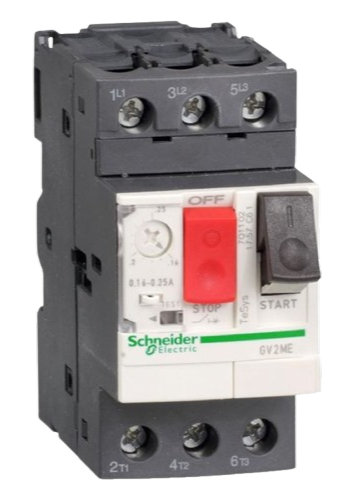

Disjuntor motor
O que é e para que serve
É um equipamento de segurança feito para proteger motores elétricos. Ele foi criado para unir a proteção contra curto-circuito, sobrecarga e falta de fase, em um único aparelho, economizando espaço e reduzindo o custo da instalação.
Como funciona
Em casos de curto circuito:
Quando dois fios batem um no outro, fazem com que a corrente crie um forte campo magnético, desligando o circuito rapidamente, impedindo que pegue fogo. É composto por três bobinas e uma engrenagem mecânica.
Em casos de sobrecarga:
Quando há uma sobrecarga, o motor começa a esquentar. O disjuntor tem lâminas internas que entortam com o calor e desligam o motor antes que ele queime por superaquecimento.
Em casos de falta de fase:
Muitos modelos de disjuntores possuem um mecanismo que detecta caso uma das fases caia ou tenha uma tensão nula, desligando o motor para que ele não estrague.
Ajuste de corrente
O disjuntor motor possui um disco giratório para ajuste da corrente de sobrecarga. Isso é essencial porque os motores possuem um Fator de Serviço (FS), um multiplicador que indica quanta carga extra o motor pode suportar continuamente sob condições nominais. O ajuste evita que o disjuntor desarme sem necessidade em momentos onde o motor opera com segurança na sua faixa limite do fator de serviço.
